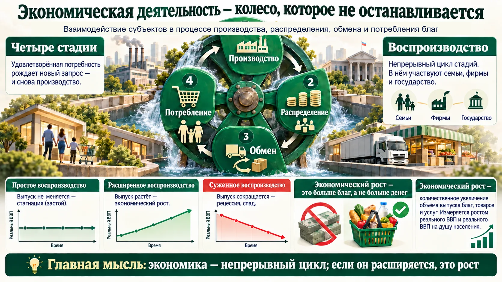
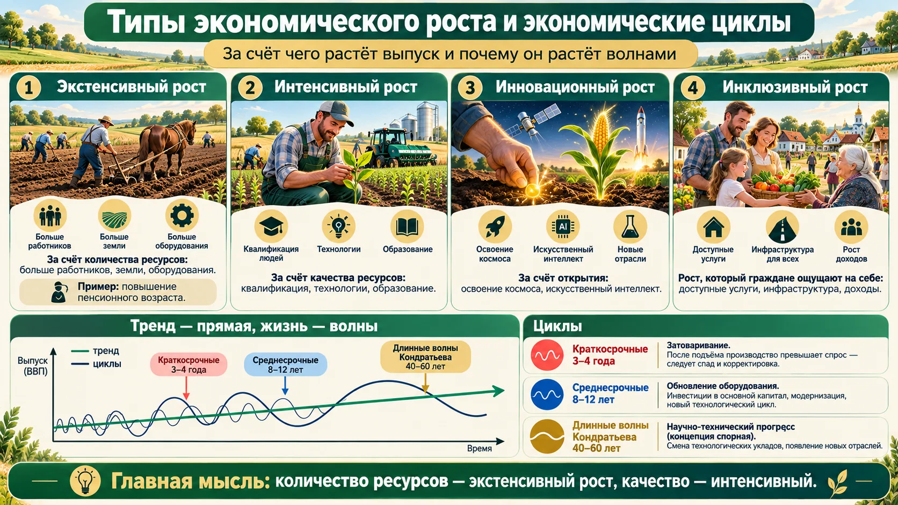
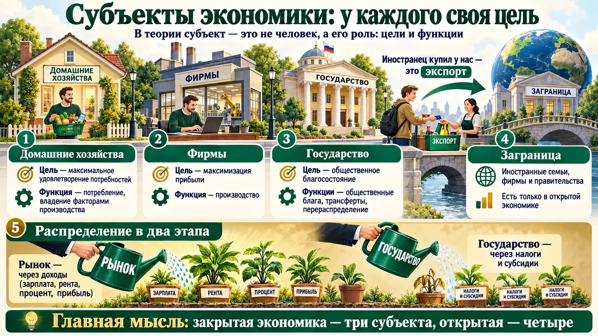
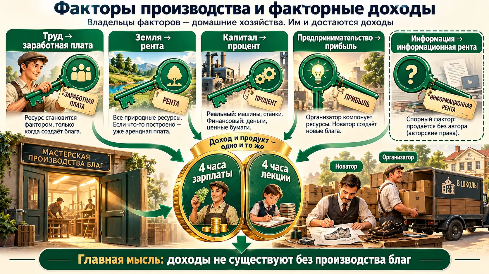
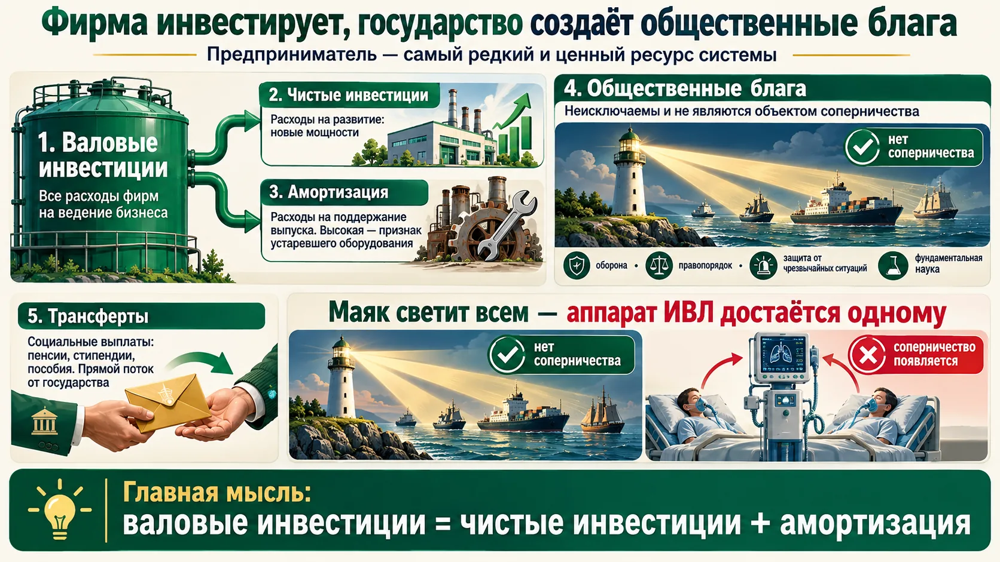
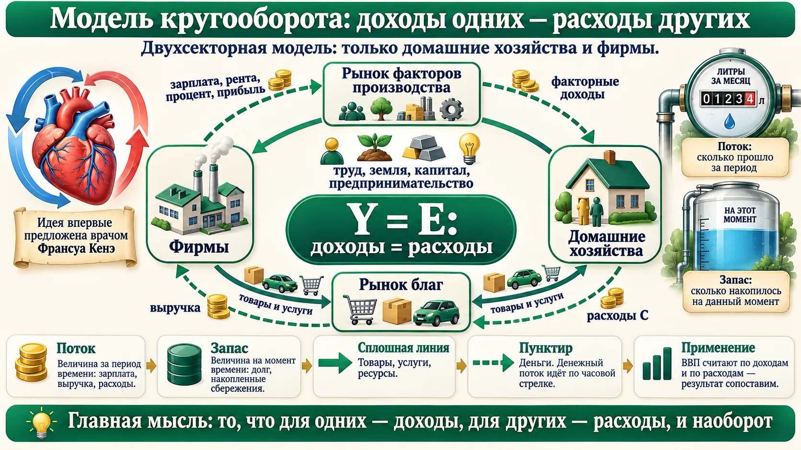
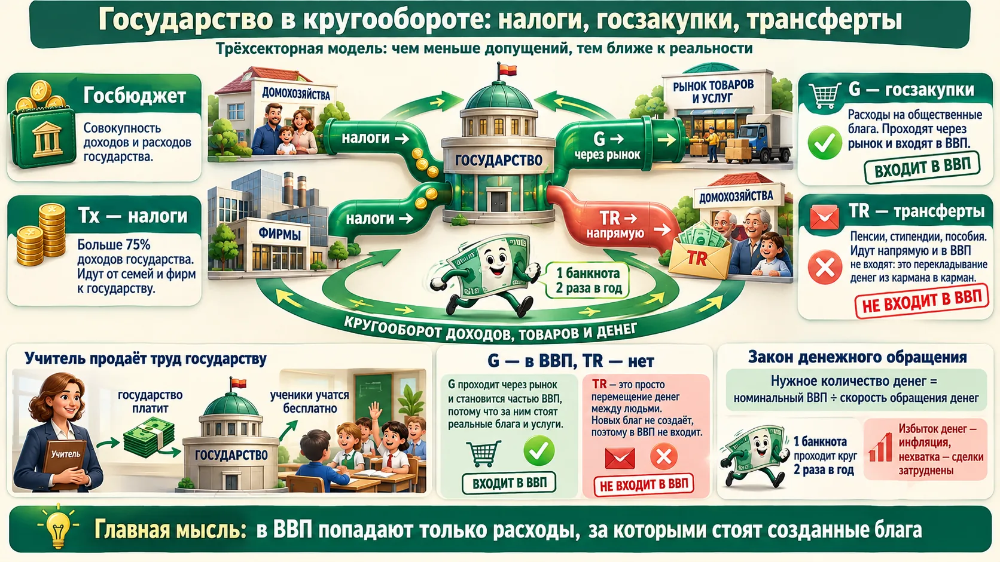
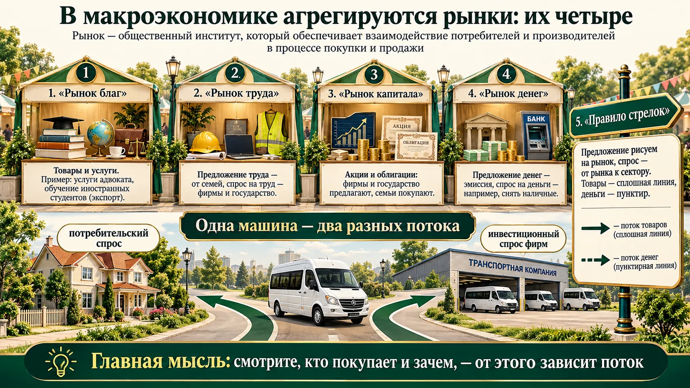
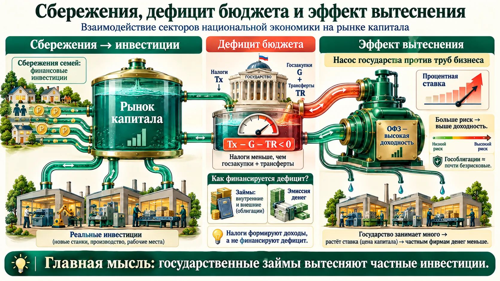
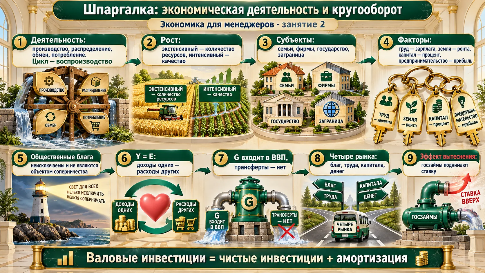

Экономическая деятельность и воспроизводство
Экономика — колесо, которое не останавливается: удовлетворённая потребность рождает новый запрос.

Воспроизводство
Непрерывный цикл четырёх стадий называется воспроизводством. В него вовлечены все субъекты: семьи, фирмы и государство (в открытой экономике — ещё и «заграница»).
Располагаемый доход семьи делится на две части: C — потребление и S — сбережения. Потребление — это социальный заказ производителю: что люди покупают, то и будет производиться.
Три типа воспроизводства
| Тип | Выпуск | Фаза |
|---|---|---|
| Простое | не меняется | стагнация, застой |
| Расширенное | растёт | экономический рост |
| Суженное | сокращается | рецессия, спад |
Как нарисовать аккуратно
По вертикальной оси — реальный ВВП (в национальной валюте), по горизонтальной — время. Прямая на таком графике — это тренд, выведенный статистическими методами. Сама экономика развивается не линейно, а циклично.
Благосостояние нации — не в деньгах, а в уровне удовлетворения потребностей. «Если бы не было роста, мы бы гладили не утюгом, а деревянной ребристой доской».
Рост измеряют реальным ВВП
Номинальный ВВП может расти и при неизменном выпуске — просто из-за инфляции (раздел 3 занятия 1). Рост — это больше благ, а не больше денег. Поэтому в определении стоит реальный ВВП и реальный ВВП на душу населения.
Что считают рецессией на практике
В лекции рецессия — это спад, сокращение выпуска. В прикладной статистике часто пользуются правилом «два квартала подряд снижения реального ВВП». Это удобная примета, а не строгое определение: МВФ подчёркивает, что спад оценивают по многим показателям сразу — выпуску, занятости, доходам, продажам.
Источник: МВФ, Back to Basics: Recession.
Колесо воспроизводства в вашей компании
- Найдите, где колесо тормозит. Производство без сбыта — склад, сбыт без распределения (расчётов) — дебиторка, потребление без нового запроса — нет повторных покупок.
- Различайте «больше денег» и «больше продукции». Рост выручки на 8% при росте цен на 7% — это почти простое воспроизводство, а не рост бизнеса.
- Читайте фазу страны. Стагнация, рост или рецессия задают фон для плана продаж: в стагнацию борются за долю рынка, в рост — за мощности.
Типы экономического роста и экономические циклы
Выпуск можно наращивать количеством ресурсов или их качеством. А сам рост идёт не по прямой, а волнами.

1. Экстенсивный
За счёт количества ресурсов: больше работников, земли, оборудования. Пример преподавателя — повышение пенсионного возраста увеличило рабочую силу.
2. Интенсивный
За счёт качества ресурсов: квалификация сотрудников, уровень подготовки, технологии, образование.
3. Инновационный
За счёт концептуального открытия: освоение космоса в СССР (конец 50-х — начало 60-х), отчасти искусственный интеллект. В учебниках обычно не выделяется.
4. Инклюзивный
Рост, который граждане ощущают на себе: доступные общественные блага, инфраструктура, доходы. Обсуждается примерно с 2010 года. Слово — из «инклюзивной среды».
Экстенсивный — количество, интенсивный — качество
Типичная путаница: «внедрили новые станки — экстенсивный рост, потому что станков стало больше». Решает не то, что добавили, а за счёт чего вырос выпуск. Больше станков того же качества — экстенсивный. Те же работники выпускают больше благодаря лучшей технологии — интенсивный.
Экономические циклы
| Цикл | Длительность | Причина |
|---|---|---|
| Краткосрочный | 3–4 года | несовпадение спроса и предложения, затоваривание: предложение опережает спрос |
| Среднесрочный | 8–12 лет (в IT — около 6) | обновление основных фондов: амортизация обгоняет чистые инвестиции, пора менять оборудование |
| Длинные волны Кондратьева | 40–60 лет | научно-технический прогресс (например, электричество). Концепция спорная |
Чем быстрее развиваются технологии, тем короче цикл.
Николай Кондратьев (1892–1938) и длинные волны
Русский экономист, директор Конъюнктурного института. В работе «Большие циклы конъюнктуры» (1925) по ценам, процентам и производству Англии, Франции и США за 140 лет выделил волны длиной около 50 лет и связал их с волнами технических изобретений. Репрессирован и расстрелян в 1938 году. Термин «волны Кондратьева» ввёл Йозеф Шумпетер в «Деловых циклах» (1939).
Н. Д. Кондратьев, «Большие циклы конъюнктуры», 1925; J. Schumpeter, «Business Cycles», 1939.
Как циклы называют в учебниках: Китчин, Жюглар, Кондратьев
Циклы Китчина (3–4 года) — колебания товарных запасов. Циклы Жюглара (7–11 лет) — волны инвестиций в основной капитал. Волны Кондратьева (45–60 лет) — смена технологических укладов. Названия в тесте могут встретиться без пояснений, а причины совпадают с тем, что звучало на занятии.
Инклюзивный рост
Понятие продвигают Всемирный банк, ОЭСР и Всемирный экономический форум с конца 2000-х. Идея: рост ВВП не гарантирует, что выиграют все, поэтому кроме ВВП смотрят на неравенство, бедность, доступ к образованию и медицине, продолжительность жизни. Преподаватель отметила: в крупных державах с геополитическими амбициями инклюзивность ниже, чем в относительно меньших странах (пример — Германия).
- Рост от искусственного интеллекта будет во многом нивелирован кадровым голодом: технологии дадут прирост, а нехватка людей — сокращение.
- Прогноз роста России на 2026 год, названный на занятии, — 1–1,5%: «на уровне статистической погрешности», между ростом и стагнацией. Больший рост ожидается в следующем году.
Это оценки, а не проверяемые факты. В тесте на них не опираются.
Какой рост у вашей организации
- Экстенсивный путь упирается в кадровый голод. Если план роста держится на «наймём ещё 20 человек», а людей на рынке нет, нужен интенсивный: обучение, автоматизация, стандарты.
- Среднесрочный цикл — это ваш бюджет обновления. Когда амортизационные расходы растут быстрее, чем вложения в новое, пора закладывать модернизацию, пока износ не стал авариями.
- Инклюзивность внутри компании. Если выручка растёт, а сотрудники этого не чувствуют, падает вовлечённость. Тот же вопрос, что и для страны: доходит ли рост до каждого.
Субъекты экономики: у каждого своя цель
В теории субъект — это не человек, а его роль. Один и тот же человек дома — домашнее хозяйство, а в своём бизнесе — фирма.

| Субъект | Кто это | Цель | Функция |
|---|---|---|---|
| Домашние хозяйства | все резиденты, которые потребляют и сберегают на экономической территории | максимальное удовлетворение потребностей в условиях ограниченности ресурсов | потребление; владение факторами производства |
| Фирмы (предпринимательский сектор) | все фирмы-резиденты, зарегистрированные в стране | максимизация прибыли | производство |
| Государство | учреждения всех уровней | общественное благосостояние | общественные блага, трансферты, перераспределение |
| Заграница (остальной мир) | иностранные семьи, фирмы и правительства | — | экспорт, импорт, движение капитала |
Закрытая и открытая экономика
Три субъекта (семьи, фирмы, государство) — закрытая экономика. Добавляем «заграницу» — открытая. Большинство реальных экономик открыты.
Благосостояние для разных групп разное: работающим — рабочие места, зарплата и МРОТ; пенсионерам — достойные трансферты; студентам — бюджетные места.
Распределение в два этапа
- Рынок — через факторные доходы: зарплату, ренту, процент, прибыль. «Рынок голосует за эффективного собственника через высокие доходы». Другого принципа у рынка нет.
- Государство — через налоги и субсидии: собрать с конкурентоспособных и поддержать тех, кто с точки зрения рынка неконкурентоспособен: пенсионеров, детей, людей с ограниченными возможностями здоровья.
Иностранец купил у нас — это экспорт
Студент из другой страны, который учится у нас и покупает хлеб в соседнем магазине, для нашей экономики — заграница, если у него нет нашего гражданства (резидентства). Его покупка — экспорт, хотя товар никуда не уехал. Поэтому обучение и лечение иностранцев в России — экспорт услуг, а лечение россиянина за рубежом — импорт.
Кто такой резидент по международным правилам
В статистике платёжного баланса резидентство определяется не гражданством, а центром экономических интересов: где человек живёт и работает год и дольше. Иностранец, который переехал и работает у нас больше года, становится резидентом. А студенты и пациенты — особый случай: они остаются резидентами своей страны, сколько бы ни учились и ни лечились за рубежом. Поэтому образование иностранных студентов всегда считается экспортом. В лекции резидентство упрощено до гражданства — для теста этого достаточно.
Источник: МВФ, Руководство по платёжному балансу (РПБ6), гл. 4.
Драйвер роста — экспорт, причём не сырья, а готовой продукции и услуг, конкурентных на мировых рынках. «Импорт — это когда мы работаем на иностранцев»: обеспечиваем рынок сбыта их продукции, и прирастает их благосостояние.
В теории импорт сам по себе не «плох»: он даёт доступ к товарам и технологиям, которые дома дороже или недоступны. В формуле ВВП он вычитается только потому, что его произвели не у нас.
Кто ваш клиент в терминах субъектов
- У каждого субъекта своя логика покупки. Семья максимизирует удовлетворение, фирма — прибыль, госзаказчик — общественное благосостояние по правилам закупок. Одно и то же предложение для них упаковывается по-разному.
- Экспорт может быть у вас дома. Иностранные студенты, туристы, пациенты — это экспортная выручка без таможни. Для вуза, клиники, гостиницы это отдельная стратегия.
- Перераспределение — часть вашего рынка. Пенсии, субсидии, стипендии — это доходы ваших клиентов. Изменения социальной политики меняют спрос.
Доход и продукт — одно и то же. Факторы производства
Все, кто получает доход, участвуют в создании продукта. Владельцы факторов производства — домашние хозяйства.

Почему доход = продукт
ВВП (реальный ВВП обозначается Y) — это одновременно национальный доход и объём выпуска. В учебниках на любом языке эти слова — синонимы.
Пример преподавателя: за 4 академических часа она получает зарплату — доход на фактор «труд». И за те же 4 часа создаёт продукт — образовательную услугу. Две стороны одной монеты.
Вывод: доходы не существуют вне производства благ. Когда товарная масса сокращается (ковид), падают и доходы. Раздувание финансового сектора без опоры на реальный — крах, как в 90-е.
Факторы производства
Факторы производства — ресурсы, которые непосредственно участвуют в создании благ, товаров и услуг и на которые определён факторный доход. Владельцы — домашние хозяйства, они и получают факторные доходы.
| Фактор | Что входит | Доход |
|---|---|---|
| Труд | становится фактором, только когда создаёт блага (при тотальной безработице ресурс есть, фактора нет) | заработная плата |
| Земля | все природные ресурсы: почвы, климат, ископаемые; пример — сухой ельник, который покупают на переработку для косметики | рента (если ничего не вложено); если построено или посажено — арендная плата |
| Капитал | реальный — машины, станки, оборудование, технологии; финансовый — деньги и ценные бумаги | процент |
| Предпринимательство | способность организовать дело и создавать новое в условиях риска | прибыль |
| Информация (спорный) | интеллектуальный и художественный продукт, который продаётся без автора | роялти / информационная рента |
Рента — не арендная плата
Рента — доход на землю «в чистом виде», когда в неё не вложено ни рубля. Если на земле построен гольф-клуб или посажен сад, плата за пользование — уже арендная плата: в ней кроме ренты сидят процент на вложенный капитал и амортизация. И ещё: «классическая триада» — это труд, земля, капитал; предпринимательство добавили позже.
Две трактовки предпринимательства
- Организатор — в конкретных условиях места и времени компонует ресурсы так, чтобы максимизировать прибыль.
- Новатор — создаёт принципиально новые блага, товары и услуги.
Кейс — фильм «Дуэль братьев. Адидас и Пума»: младший брат Адольф Дасслер — новатор, который создаёт обувь нового уровня; старший Рудольф — организатор, который запускает бизнес: маленькие партии по 5–10 пар, развоз по школам, «сначала поиграйте в шиповках, потом покупайте».
Информация — отдельный фактор?
Вопрос дискуссионный. Одни учёные считают информацию частью труда: надбавки за степень и звание сидят в зарплате. Довод «за» — информация может продаваться бессубъектно: автора уже нет, а его произведения продаются, и наследники получают не зарплату и не прибыль, а информационную ренту (наследие Высоцкого, Шукшина, Пушкина).
Это тема кандидатской диссертации преподавателя (2004).
Жан-Батист Сэй (1767–1832) и «классическая триада»
Французский экономист, популяризатор идей Адама Смита во Франции. В «Трактате политической экономии» (1803) описал производство как совместную работу трёх факторов — труда, земли и капитала, каждый из которых приносит свой доход: зарплату, ренту и процент. Это и есть «классическая триада». Сэй же одним из первых выделил фигуру предпринимателя-организатора.
Поправка к лекции: на занятии прозвучало, что Сэй писал «ещё до Адама Смита». На самом деле наоборот: «Богатство народов» Смита вышло в 1776 году, трактат Сэя — в 1803-м.
Йозеф Шумпетер (1883–1950): предприниматель-новатор
Австрийско-американский экономист. В «Теории экономического развития» (1911) определил предпринимателя как того, кто осуществляет «новые комбинации»: новый товар, новый способ производства, новый рынок, новый источник сырья, новую организацию отрасли. Отсюда «созидательное разрушение» (занятие 1): новое вытесняет старое. Трактовка «новатора» в тестах обычно связана с его именем.
Братья Дасслер: Adidas и Puma
Адольф (Ади) и Рудольф Дасслеры основали обувную фабрику «Gebrüder Dassler» в баварском Херцогенаурахе в 1924 году. В 1936 году на Олимпиаде в Берлине в их шиповках бегал Джесси Оуэнс. После войны братья рассорились: Рудольф в 1948 году основал Puma, Адольф в 1949-м — Adidas. Обе компании до сих пор находятся в Херцогенаурахе. Фильм «Дуэль братьев» (2016) — художественный, в деталях он отходит от истории.
Владислав Иноземцев и «информационная рента»
Российский экономист, автор работ о постиндустриальном обществе. На его концепции преподаватель построила свою диссертацию об информации как факторе производства. Сейчас признан в России иностранным агентом.
- Предприниматель — самый дорогой и самый важный ресурс для системы; государство должно всячески его поддерживать.
- Предпринимательство — самый редкий ресурс: способностями к нему наделены около 6% населения (источник на занятии не назван).
Организатор и новатор в одной команде
- Редко кто силён в обоих. Новатор без организатора создаёт прототипы, которые никто не покупает. Организатор без новатора масштабирует то, что скоро устареет. Сильные команды собирают пару, как братья Дасслер.
- «Сначала попробуйте — потом покупайте». Маленькие партии и продажа прямо заинтересованному клиенту — та же логика, что сейчас называют проверкой гипотезы на минимальном продукте.
- Ваши доходы — плата за факторы. Разложите доход собственника: что в нём зарплата за собственный труд, что процент на вложенный капитал, а что настоящая предпринимательская прибыль. Часто «прибыли» после этого почти не остаётся.
Фирма инвестирует, государство создаёт общественные блага
Валовые инвестиции делятся на развитие и поддержание. Общественное благо узнают по двум признакам.

Инвестиции фирм
- Валовые (совокупные) инвестиции — общие расходы предпринимательского сектора на ведение бизнеса.
- Чистые инвестиции — то, что компания тратит на развитие.
- Амортизация — то, что фирма тратит на поддержание уровня выпуска. Если она велика, компания работает на устаревшем оборудовании и не может создать конкурентный продукт.
Сбережения домашних хозяйств связаны с инвестициями фирм через рынок капитала (раздел 9).
Государство: два предназначения
- Общественные блага: охрана правопорядка, защита территории (теперь и ракетная, беспилотная безопасность), помощь при чрезвычайных ситуациях, образование, медицина, инфраструктура, фундаментальная наука.
- Трансферты — социальные выплаты: прямой поток от государства к семьям и фирмам.
Пример: дефицит ИВЛ в пандемию
Когда пациентов стало больше, чем аппаратов, медицина начала обсуждать нормативы: кого подключать, а кого нет. Если общественное благо становится дефицитным, оно превращается в объект соперничества и перестаёт быть общественным — государство не справляется со своей функцией. Локдаун, по словам преподавателя, был нужен прежде всего для того, чтобы снять нагрузку с больниц.
Фундаментальная наука — общественное благо
Глубокая разработка может разорить компанию, а для государства неудача — просто знание, что искать надо в другую сторону. Поэтому космос, Мировой океан, новые источники энергии, вакцины берёт на себя государство и потом делится результатами бесплатно.
Кейс «два сканера» (журнал «Эксперт»): физик встроил один оптический модуль в два прибора. Сканер состава лекарств не продался: «одним неинтересно, что в таблетке, другие не хотят показывать». Сканер драгоценных камней продался. Успех определяет спрос, а не технология.
Образование и медицина — не «чистые» общественные блага
На занятии их назвали общественными благами в широком смысле — то, что государство бесплатно предоставляет всем. В строгой теории это не так: из школы и больницы можно исключить (места, запись, полис), и места в них конкурентны — что и показал пример с ИВЛ. Такие блага называют социально значимыми (или «достойными», merit goods). Классические чистые общественные блага — оборона, правопорядок, маяк, уличное освещение, фундаментальное знание.
Пол Самуэльсон и теория общественных благ (1954)
Строгое определение общественного блага дал Пол Самуэльсон в статье «The Pure Theory of Public Expenditure» (1954): это благо, потребление которого одним человеком не уменьшает его потребления другими. Отсюда «проблема безбилетника»: раз исключить нельзя, каждый надеется, что заплатит кто-то другой, и рынок производит таких благ слишком мало. Поэтому их финансирует государство из налогов.
P. Samuelson, «The Pure Theory of Public Expenditure», Review of Economics and Statistics, 1954.
Почему маяк — классический пример
Свет маяка видят все корабли сразу, и нельзя «выключить» его для того, кто не заплатил сбор. Ещё Джон Стюарт Милль (1848) приводил маяк как дело, которое должно взять на себя государство. Рональд Коуз в 1974 году показал, что в Англии маяки долго строили частные компании, собирая плату в портах, — поэтому пример стал и классическим, и спорным.
Что смотреть руководителю
- Доля амортизации в инвестициях. Если почти всё, что вы вкладываете, уходит на ремонт и замену изношенного, компания стоит на месте, даже если тратит много.
- Общественные блага — бесплатный ресурс для бизнеса. Дороги, транспортная система, безопасность, туристическая инфраструктура города снижают ваши издержки. Ярославские курсы по туризму востребованы именно потому, что город вкладывается в инфраструктуру.
- Технология без спроса — история сканера лекарств. Прежде чем вкладываться в разработку, проверьте, кто будет платить и хочет ли он это знать.
Модель кругооборота: доходы одних — расходы других
Двухсекторная модель: только семьи и фирмы, два рынка, два потока. Ради одного вывода — основного макроэкономического тождества.

Сбережения бывают и потоком, и запасом
«Сбережения за год» — поток (сколько отложили за период). «Сбережения семей на 1 января» — запас (сколько накоплено на дату). То же с долгом: дефицит бюджета за год — поток, государственный долг — запас. Смотрите на слова «за период» и «на момент».
Как устроена схема
- Субъекты: домашние хозяйства (владельцы ресурсов, потребляют и сберегают) и фирмы (создают блага, покупают ресурсы, выплачивают факторные доходы, инвестируют).
- Рынки: рынок благ (товары и услуги) и рынок факторов производства (труд, земля, капитал, предпринимательство). Неэкономические, даровые блага — воздух, солнечный свет, ветер — на рынок не попадают.
- Сплошная линия — товары, услуги, ресурсы. Пунктир — деньги. Денежный поток идёт по часовой стрелке.
Встаём на место домашней хозяйки
Идём на рынок благ — это наши личные потребительские расходы C. Для фирмы те же деньги — выручка (в макро — доходы). Но мы и продаём: труд — университету за зарплату, квартиру — в аренду, деньги — в банк под процент, самозанятость — за прибыль. Это факторные доходы, а для фирм — расходы.
Это равенство называется основным макроэкономическим тождеством: Y = E (доходы = расходы).
Практическое применение
ВВП измеряется по доходам и по расходам, и результаты сопоставимы. Именно потому, что работает этот закон: каждый потраченный рубль кем-то получен.
Y = E и Y = C + I + G + Xn — одно тождество
На занятии 1 основным тождеством назвали Y = C + I + G + Xn. Это то же самое: E — совокупные расходы, и они как раз складываются из расходов четырёх субъектов. В тесте могут встретиться обе записи.
Франсуа Кенэ (1694–1774) и «Экономическая таблица»
На занятии прозвучало: модель кругооборота первым придумал врач — по аналогии с большим и малым кругами кровообращения. Это Франсуа Кенэ, придворный врач Людовика XV и основатель школы физиократов. В «Экономической таблице» (1758) он впервые показал экономику как круговое движение продукта и денег между классами общества: земледельцами, землевладельцами и ремесленниками. Современная схема кругооборота — прямой потомок этой таблицы.
Ваши расходы — чьи-то доходы
- Сокращение затрат бьёт по выручке других — и потом по вашей. Когда все фирмы одновременно режут зарплаты и закупки, падают доходы семей, а с ними спрос на ваши товары (парадокс бережливости, занятие 1).
- Деньги клиентов где-то заработаны. Чтобы прогнозировать спрос, смотрите на источник доходов вашего клиента: зарплаты в отрасли, госзаказ, экспорт.
- Поток и запас в отчётности. Выручка, затраты, денежный поток — потоки; остатки денег, долги, запасы на складе — запасы. Сравнивать поток с запасом напрямую нельзя: «долг — 3 годовые прибыли» уже соотношение потока и запаса.
Государство в кругообороте: налоги, госзакупки, трансферты
Чем меньше допущений, тем ближе модель к реальности. Добавляем в схему государственный бюджет.

Tx — налоги
Основной доход государства — больше 75%. Есть и другие: доходы госкорпораций и компаний с госучастием, приватизация. В модели от них абстрагируемся. Стрелка — пунктир от семей и фирм к государству.
G — госзакупки
Расходы на создание общественных благ. Проходят через рынок и учитываются в ВВП. Взамен семьи и фирмы бесплатно получают общественные блага.
TR — трансферты
Социальные выплаты: пенсии, стипендии, пособия. Идут напрямую, в ВВП не участвуют: «перекладывание денег из кармана в карман», как карманные деньги детям.
Государство покупает труд
Слушатель заметил: фактор производства не может быть общественным благом. Преподаватель согласилась и уточнила. Учительница продаёт свой труд государству — ей платит бюджет, а дети учатся бесплатно. Так же сотрудник МЧС, полицейский, военный. Значит, на рынке факторов государство покупает труд, а общественное благо — это уже услуга: образование, безопасность, медицина.
Закон денежного обращения
Товары уходят в конечное потребление, а деньги совершают несколько оборотов. Скорость обращения показывает, как быстро идут сделки: по словам преподавателя, в России сейчас около 2 оборотов в год, это мало.
Сколько денег нужно экономике? Номинальный ВВП ÷ скорость обращения. Избыток денег — инфляция, нехватка — сделки затруднены. Деньги — такой же товар, как любой другой.
Уравнение обмена Фишера: MV = PY
M — денежная масса, V — скорость обращения, P × Y — номинальный ВВП (цены × реальный выпуск). Отсюда то, что прозвучало на занятии: M = PY / V. Если V и Y почти не меняются, а M растёт быстрее выпуска, растёт P — инфляция. Это основа количественной теории денег и монетаризма (занятие 1, справка о Фридмане).
I. Fisher, «The Purchasing Power of Money», 1911.
Что входит в ВВП, а что нет
- Госзакупки (G) входят: за ними стоят созданные блага и услуги.
- Трансферты (TR) не входят: пенсия, стипендия, пособие — перераспределение уже созданного дохода. ВВП вырастет, только когда получатель потратит эти деньги на товары, и посчитаны они будут как его потребление C.
- Новое жильё семьи — это инвестиции I, а не потребление. Автомобиль, холодильник и другие товары длительного пользования — потребление C.
Как читать бюджет страны и региона
- Госзакупки — прямой спрос на рынке благ. Рост G в вашей отрасли — это заказы; падение — сигнал искать других клиентов.
- Трансферты — косвенный спрос. Индексация пенсий и пособий пойдёт в розницу, аптеки, услуги — туда, где тратят получатели.
- Налоги — изъятие из кругооборота. Рост налогов на семьи сокращает их располагаемый доход, а значит, C.
Поиграйте с ползунками в тренажёре кругооборота выше: кнопка «Трансферты +20» не меняет ВВП, а «Госзакупки +20» — меняет.
Практикум: четыре рынка и 18 потоков
Сначала попробуйте сами разложить сделки на схеме — так было и на занятии. Объяснение и картинка — после задания.
Рынок — общественный институт, который обеспечивает взаимодействие потребителей и производителей в процессе покупки и продажи.
Задание. Для каждого из 18 примеров решите: откуда идёт поток, куда и какой линией его рисовать. Правило, о котором договорились на занятии: предложение рисуем на рынок, спрос — от рынка к сектору. Товары, услуги, ресурсы и ценные бумаги — сплошная линия, деньги — пунктир. Не подглядывайте в разбор ниже, пока не проверите себя.
Разбор: что спросили и ответили на занятии
Одна «Газель» — два разных потока. Покупка частным лицом — потребительский спрос: от рынка благ к домашним хозяйствам. Покупка автотранспортным предприятием — инвестиционный спрос фирм: тоже от рынка благ, но к фирмам. Слушатель спросил, не идёт ли инвестиционный спрос с рынка капитала. Нет: машины, станки, оборудование, здания — реальные инвестиции, и покупают их на рынке благ. Рынок капитала — это откуда фирма взяла деньги, а в задаче нужно было соединить только два элемента: рынок и сектор.
Стипендия и наличные. Снять наличные — это спрос на деньги (от рынка денег к семье). Сама стипендия — трансферт от государства (отдельный поток). «Если всё это строить одной цепочкой, мы с ума сойдём, закопаемся».
«Роснано» — фирма или государство? Фирма: все акции у государства, но акции есть — значит, это предпринимательский сектор.
Акции английского клуба. Деньги частного лица ушли за рубеж — это отток капитала: они не работают на наш предпринимательский сектор и не платят здесь налогов.

| Рынок | Предложение (на рынок) | Спрос (к сектору) |
|---|---|---|
| Благ | фирмы (товары и услуги), заграница (импорт) | семьи (C), фирмы (I), государство (G), заграница (экспорт) |
| Труда | домашние хозяйства | фирмы и государство |
| Капитала | фирмы и государство выпускают ценные бумаги | семьи покупают ценные бумаги |
| Денег | государство (эмиссия) | все, у кого есть доходы (например, снять наличные) |
- Ценные бумаги — не деньги. Это высоколиквидные активы, их место — рынок капитала, а не рынок денег.
- Государственная фирма — это фирма. Если у компании есть акции, она в предпринимательском секторе, кто бы ими ни владел.
- Направление решает покупатель. Одна и та же «Газель», один и тот же компьютер — потребление, если купила семья, и инвестиции, если фирма для работы.
Откуда в учебниках модель с четырьмя рынками
Деление на рынки благ, труда, денег и капитала (ценных бумаг) — стандарт макроэкономических учебников со времён кейнсианского синтеза: на каждом рынке своя цена (уровень цен, зарплата, процентная ставка, курс бумаг), и равновесие всей экономики — это равновесие сразу на всех четырёх. На этом строятся модели IS–LM и AD–AS, которые будут в курсе макроэкономики.
Разложите свою компанию по четырём рынкам
- Рынок благ — где вы продаёте и где покупаете сырьё и оборудование.
- Рынок труда — где нанимаете и с кем конкурируете за людей (в том числе с государством: бюджетные зарплаты тоже задают планку).
- Рынок капитала — откуда берёте деньги на развитие: прибыль, кредит, облигации, лизинг.
- Рынок денег — ставка ЦБ и денежная масса определяют цену ваших кредитов и спрос клиентов.
Изменение на любом из четырёх рынков дойдёт до вас — вопрос только, через какую стрелку.
Рынок капитала, дефицит бюджета и эффект вытеснения
Сбережения семей превращаются в инвестиции фирм. Но на тот же рынок выходит государство — и забирает часть денег себе.

Зачем стране сбережения
Деньги можно положить в банк, купить бумаги через брокерский счёт, вложить в инвесткопилку или ПИФ — «главное, чтобы они попали на рынок капитала». Там их получает фирма и покупает станки, машины, софт.
Если сбережений нет («все закредитованы»), внутренний рынок капитала не развит: бизнес занимает за рубежом или растёт только на свою прибыль и амортизацию, что сдерживает развитие.
Источники финансирования фирмы: внутренние — амортизация, часть прибыли; внешние — эмиссия акций и облигаций, кредиты, лизинг.
Маркс о железных дорогах
На занятии: Маркс говорил, что благодаря рынку капитала возможны железные дороги — их не построит даже самый богатый одиночка. В «Капитале»: «Мир до сих пор оставался бы без железных дорог, если бы ему пришлось дожидаться, пока накопление не доведёт некоторые отдельные капиталы до таких размеров, что они могли бы справиться с постройкой железной дороги. Напротив, централизация посредством акционерных обществ осуществила это в один миг».
К. Маркс, «Капитал», т. 1, гл. 23.
Как финансируют дефицит бюджета
Только два способа:
- Займы — облигации. Внутренние — у своих граждан и фирм. Внешние — у других государств и международных организаций; они делают экономику уязвимой.
- Эмиссия — выпуск денег в обращение.
Налоги — не способ финансирования дефицита, а способ формировать доходы. Их меняют редко, раз в 3–5 лет (последнее повышение — 2025: пятиступенчатая шкала НДФЛ, налог на прибыль). Принцип со времён Смита: если часто поднимать налоги, все уйдут в тень.
Риск и доходность
Больше риск — выше доходность, меньше риск — ниже. Гособлигации (в России — ОФЗ, в общем виде — ГКО, государственные краткосрочные облигации) обеспечены государством и считаются почти безрисковыми — это альтернатива банковскому вкладу.
Слушатели напомнили: в 1998 году так же думали о ГКО, а потом был дефолт.
Эмиссия как способ покрыть дефицит
В учебной схеме способов два: займы и эмиссия (преподаватель назвала доли «около 80 и 20%» — это её оценка). В России прямое кредитование правительства Центральным банком запрещено законом о Банке России (ст. 22). Поэтому на практике дефицит покрывают в основном ОФЗ и средства Фонда национального благосостояния. Для теста ответ «займы и эмиссия» верный.
Федеральный закон от 10.07.2002 № 86-ФЗ «О Центральном банке Российской Федерации (Банке России)», ст. 22.
- Госзакупки выросли примерно на 30% в связи с оборонкой. Они «не насыщают рынок, а создают повышенный уровень заработной платы»: зарплаты растут быстрее производительности труда, это чревато перегревом спроса, инфляцией и новым повышением ключевой ставки.
- Самая «мультипликативная» отрасль — строительство: льготные кредиты и спрос на жильё расходятся по всей экономике.
- Не факт, что мегарегулятор (ЦБ, регулирующий весь финансовый рынок) будет существовать всегда.
- «Понятно, что надо идти в госзакупки — поближе к кормушке».
«Как это применить в жизни?» — кейс производителя окон
Слушатель спросил, как применить абстрактную схему в своём бизнесе. Ответ преподавателя: готовых рецептов курс не даёт, но ваше предприятие находится в этой системе, и любой поток так или иначе отразится на вашей деятельности. Пример — партнёр кафедры, производитель пластиковых окон. Когда остановился отток капитала из страны, деньги остались внутри, и он понял: их понесут в индивидуальное строительство. Компания вышла на рынок в радиусе 300 км и работает 24/7. «Он понимает, как устроена система: если финансового оттока нет, здесь будут формироваться долгосрочные активы».
Ещё один кейс того же дня — теория потребительского поведения: фирма, которая видит разные модели поведения клиентов-мужчин (модник, любитель охоты и рыбалки, собиратель гаджетов, «взрослый ребёнок»), выигрывает на разнообразном спросе. Это экономическая модель: она опирается на рациональность и альтернативную стоимость, а не только на психологию.
- Следите за дефицитом бюджета и размещениями ОФЗ. Крупные заимствования государства — сигнал, что кредиты для бизнеса будут дорогими.
- Сравнивайте проект с доходностью ОФЗ. Если ваш проект приносит меньше, чем почти безрисковые гособлигации, инвестору (и вам самим) выгоднее купить облигации.
- Деньги идут за госзаказом. В период больших госрасходов растут отрасли-подрядчики и их поставщики — проверьте, можете ли вы встать в эту цепочку.
- Отслеживайте потоки капитала. Отток или приток денег в страну меняет спрос на долгосрочные активы — жильё, стройку, оборудование. Так производитель окон увидел свой рост раньше конкурентов.
Что выучить к аттестации
Отмечайте пункт, когда можете объяснить его своими словами без подсказки. Отметки сохраняются в браузере.
Второе занятие готово к аттестации.
Проверьте себя
Пятнадцать вопросов в формате теста. После ответа — правильный вариант и короткий разбор.
1. Экономическая деятельность — это взаимодействие субъектов в процессе…
2. Простое воспроизводство соответствует фазе…
3. Экономический рост выражается в росте…
4. Повышение пенсионного возраста увеличило рабочую силу и выпуск. Это рост…
5. Иностранный студент без российского гражданства купил продукты в магазине в Ярославле. Для экономики России это…
6. Цель фирмы в экономической теории —
7. Доход на фактор «земля» называется…
8. Валовые инвестиции равны…
9. Признаки общественного блага —
10. Что из перечисленного — запас, а не поток?
11. Основное макроэкономическое тождество, которое иллюстрирует модель кругооборота:
12. Что не включается в ВВП?
13. Автотранспортное предприятие купило новую «Газель» для перевозок. На схеме кругооборота это…
14. Способы финансирования дефицита государственного бюджета —
15. Эффект вытеснения — это…
Отвечено: 0 / 15
Шпаргалка: главное из занятия

- Экономическая деятельность — производство, распределение, обмен, потребление. Непрерывный цикл — воспроизводство: простое (стагнация), расширенное (рост), суженное (рецессия).
- Рост — больше благ, а не денег: реальный ВВП и реальный ВВП на душу. Экстенсивный — количество ресурсов, интенсивный — качество.
- Субъект — это роль: семьи максимизируют удовлетворение потребностей, фирмы — прибыль, государство — общественное благосостояние. Покупка иностранца у нас — экспорт.
- Доход = продукт. Труд — зарплата, земля — рента, капитал — процент, предпринимательство — прибыль. Владельцы факторов — домашние хозяйства.
- Валовые инвестиции = чистые + амортизация. Общественные блага неисключаемы и неконкурентны.
- Y = E: доходы одних — расходы других. ВВП считают по доходам и по расходам. Госзакупки входят в ВВП, трансферты — нет.
- Четыре рынка: благ, труда, капитала, денег. Предложение — на рынок, спрос — к сектору.
- Сбережения → инвестиции через рынок капитала. Дефицит финансируют займами и эмиссией; госзаймы поднимают ставку и вытесняют частные инвестиции.